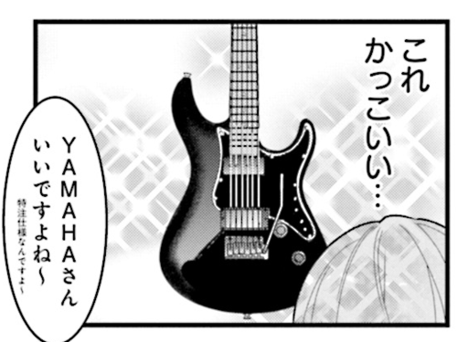

以前ぼっち・ざ・ろっくってマンガを 3 巻の途中くらいまで読んだことがある。だけど読んだことすら記憶のどこかに行ってしまっていた。
下の TC 楽器さんの動画を見てどんな話だったか思い出そうと、ちょっと読み返してみようと思った。
最初、主人公は父親に譲ってもらった Gibson Les Paul Custom を使っているのだけど、ライブでトラブったのを機会に自前の楽器を購入することになった。
Les Paul をお店に持っていってリペアしてもらえばええのでは？と正直思ったが提供各社からの謎の力が働いたのかも。知らんけど。
主人公が選んだのは YAMAHA Pacifica 611。フロントに P-90、リアにハムバッカーを積んだ機種だ。連載当時 611 が実在したのかはよく知らない。Pacifica を改造して P-90 を載せる主人公仕様にする記事や動画があったりするのでもしかすると以前は 611 仕様のギターはなかったのかも。
ぼっち・ざ・ろっくでの主人公用ギターの選択でいいところは、YAMAHA Pacifica 611 っていう高校生でも手が届くギターにしてることだよな。
主人公が自分のお金で YAMAHA Pacifica を買うまでは、父親に譲ってもらった Gibson Les Paul Custom を使ってるけど、父親に譲ってもらったってことならあまり無理な設定でもないし。
父親がまだ若い独身社会人だった頃ならローンで Gibson Les Paul Custom を買えなくもないだろうし。現行品でカスタム・ショップ製でなければ車よりは安い。まぁビンテージはさすがに無理だろうけど。ものによっては家を買うぐらいの覚悟がいるし。
けいおんで高校生が Fender やら Gibson を買って使ってるのを見て、さすがにそれはねーわ、って突っ込まざるを得なかったけど、Yamaha Pacifica ならバイト代を貯めれ高校生でも十分手が届くし現実的。実際アニメの影響で Yamaha Pacifica 売れてるらしいし。
個人的には YAMAHA Pacifica が欲しいって子には、後々のことを考えてより多彩な音作りができる 612 の方を勧めたい。P-90 のサウンドが好きやねんって人には 611 を勧める。ぼっちちゃんとおんなじ仕様のギターが欲しいねんって人は素直に 611 を選べばいいと思う。
フロントやフロントとリアのハーフトーンがもう少しジャキッとして欲しいなら P-90 よりフェンダータイプのシングルコイルを搭載してる 612 を勧めたい。PU がいわゆる SSH 構成なので 611 よりも更に多彩な音作りが楽しめる。